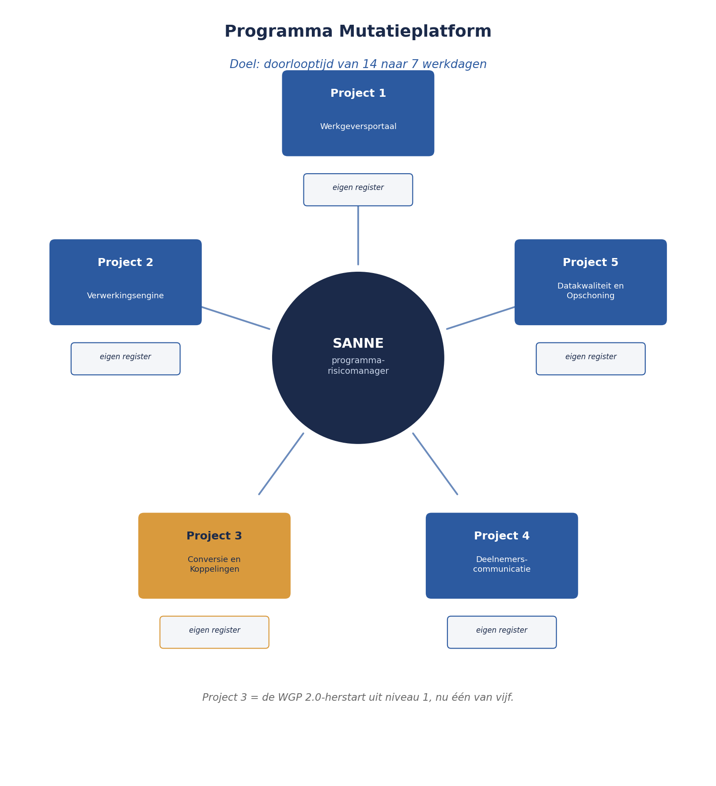

Een nieuwe functie, een nieuw programma
⏱ 8 minZes maanden na de capstone-verdediging uit deel 10 is Sanne Bakhuis gepromoveerd. Ze is niet langer risicomanager van één project — ze is programma-risicomanager van het Mutatieplatform, het programma waarin Meridiaan Pensioen vijf projecten heeft ondergebracht die samen de mutatieverwerking van werkgevers en deelnemers moeten moderniseren. Doel van het programma: de doorlooptijd van een gemiddelde mutatie halveren, van gemiddeld veertien naar zeven werkdagen.
De WGP 2.0-herstart uit niveau 1 is inmiddels afgerond en succesvol opgeleverd — het is nu, binnen het programma, Project 3: Conversie en Koppelingen. De andere vier projecten: Project 1: Werkgeversportaal (het nieuwe portaal waarmee werkgevers mutaties indienen), Project 2: Verwerkingsengine (de kern die mutaties automatisch verwerkt), Project 4: Deelnemerscommunicatie (aanpassing van brieven en digitale kennisgeving), en Project 5: Datakwaliteit en Opschoning (historische data op orde brengen vóór de nieuwe engine live gaat).
Vijf risicoregisters, vijf projectmanagers, vijf risicobereidheden die impliciet allemaal anders zijn — en Sanne, voor het eerst, met de taak om daar één samenhangend geheel van te maken. Dit niveau begint waar de cursus Project- en Programmamanagement bewust stopte: geaggregeerd risico, tot dusver alleen op examenniveau behandeld.
